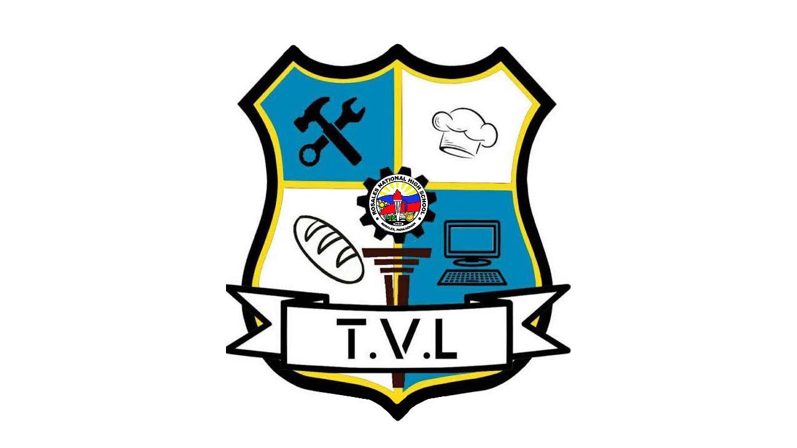

TVL TRACK
WHAT IS TECHNICAL VOCATIONAL LIVELIHOOD (TVL)?
The senior high school TVL track is designed for students who wish to start working right after they graduate from senior high school. These vocational courses give students the skills and knowledge they need to get the certifications necessary for work. The TVL track is ideal for those who intend to work abroad as skilled workers.
TVL STRANDS
WHAT IS INFORMATION AND COMMUNICATION TECHNOLOGY (ICT)?
Information Communication and Technology or ICT Strand is one of the strands offered under Technical-Vocational Livelihood (TVL) Track of K-12 curriculum. ICT strand subjects seek to teach students concepts and skills in information technology.
ICT in Senior High School equips students with the skills and knowledge they need to qualify for TESDA-backed certifications such as the Certificate of Competency (COC) and National Certifications (NC). These ICT strand courses ensure that TVL track graduates of the ICT strand in SHS can apply for IT jobs straight out of high school.
Possible College Courses Under the ICT Strand
•Computer Engineering
•Information Technology
•Software and Network Engineering
•Multimedia Arts
•Digital Illustration and Animation
•Graphic Arts
Possible Career Paths with the ICT Strand
Students enrolled in the ICT strand in senior high school can find fulfilling and successful careers in the following professions
•Programmers
•Web Developers
•Graphic Designer
•Web Designer
•Online Sales Agent
•Radio Technician
•Tech Specialist
•IT Sales Representatives
•BPO officers
WHAT IS SMAW?
The welding discipline covered in this course is Shielded Metal Arc Welding (SMAW-Stick). Students will learn arc welding safety and the fundamentals of SMAW – Stick welding process. During training, the student is to perform bridge code welds and other related structural work. This course prepares students for the pipe welding program. Other areas of study include equipment maintenance, oxy-acetylene, and plasma cutting training.
WHAT IS HOME ECONOMICS?
The Home Economics track is one of the K-12 tracks that grants students the skills and knowledge necessary for livelihood projects at home. Choosing to take subjects in the Home Economics track can also lead you to National certifications that are recognized by TESDA, which means you can start working right after senior high school. From here, the course teaches you various skills, including barbering, bartending, beauty and pastry production, fashion design, hairdressing and tourism promotion.
Possible College Courses Under HE Strand
•BS Business Education
•BS Culinary Arts
•BS Food Technoogy
•BS in Hospitality and Restaurant Management
•BS Interior Designing
•BS Nutrition
•BS in Tourism Management